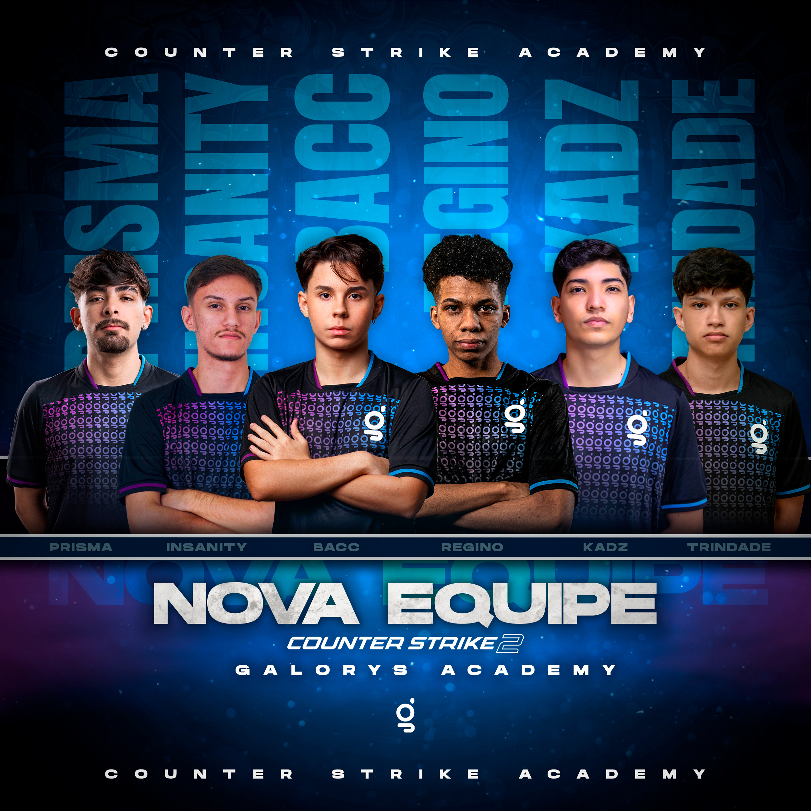

Descrição: Em junho comecei minha carreira no Jogo de FPS chamado CS2, entrando na equipe da Galorys. Atualmente estamos na Série A do Brasil. Meu principal objetivo jogando é conquistar a vaga para o campeonato mundial de CS e tentar ser o melhor no que eu faço.
